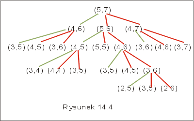

| « poprzedni punkt | nastêpny punkt » |
Problem NWP
Dane s± dwa ci±gi X i Y, X = (x1,...,xm), Y = (y1,..., yn). Znale¼æ ci±g znaków Z = (z1,...,zk) taki, ¿e Z jest najd³u¿szym podci±giem zarówno ci±gu X jak i ci±gu Y, tzn. Z jest najd³u¿szym ci±giem spe³niaj±cym warunki (1), (2):
(1) istniej± i1,..., ik takie, ¿e z1= xi1, ..., zk= xik, oraz 1 £ i1£ ... £ ik£ m,
(2) istniej± j1,..., jk takie, ¿e z1= yj1, ...,zk= yjk oraz 1 £ j1£ ... £ jk £ n.
Najd³u¿szy wspólny podci±g ci±gów X i Y oznaczamy przez nwp(X,Y).
Przyk³ad 3.1
Je¿eli X = bracbdeweczsagdj³aaopt i Y = dgadbreschrtadk³ewo, to nwp(X,Y) = abecad³o. J
Rozwi±zanie tego problemu mog³oby wygl±daæ nastêpuj±co:
- 1. Wygenerowaæ wszystkie mo¿liwe podci±gi ci±gu X.
- 2. Dla ka¿dego z nich sprawdziæ, czy jest podci±giem ci±gu Y.
- 3. Zapamiêtaæ najd³u¿szy z takich ci±gów.
Taki algorytm rzeczywi¶cie rozwi±zuje problem, ale niestety nie mo¿e zostaæ zastosowany w praktyce. Jego z³o¿ono¶æ jest wyk³adnicza. Je¶li X ma m elementów, to zbiór wszystkich jego poci±gów ma O(2m) elementów. Nawet dla ma³ych m by³by to zbyt kosztowny algorytm.
Przyjmijmy nastêpuj±ce oznaczenie dla ci±gu X = ( x1,...,xm), Xi niech oznacza i pierwszych znaków ci±gu X tzn. i-ty prefiks X. Dla i=0, X0 jest ci±giem pustym dla i=m, Xm jest po prostu ci±giem X.
Lemat 3.1 Niech Z= (z1,...,zk) bêdzie najd³u¿szym wspólnym podci±giem ci±gu X = (x1,...,xm), Y = (y1,..., yn).
(1) Je¿eli xm = yn, to zk = xm = yn oraz Zk-1 = nwp(X m-1, Yn-1).
(2) Je¿eli xm ¹ yn, to
Z = nwp(Xm-1, Y), gdy zk ¹ xm oraz
Z = nwp(X, Yn-1), gdy zk ¹ yn.
Wydaje siê, ¿e przedstawiony tu lemat daje przepis na znajdowanie najd³u¿szego ci±gu wspólnego: je¶li ostatnie znaki ci±gów s± identyczne, to jest to ostatni element najd³u¿szego wspólnego ci±gu. Je¶li ostatnie znaki w ci±gach Xm i Yn nie s± jednakowe, to albo ostatni element ci±gu Xm nie wystêpuje w najd³u¿szym wspólnym podci±gu, albo ostatni element ci±gu Yn nie wystêpuje w najd³u¿szym wspólnym podci±gu. Prowadzi to do dwóch mniejszych problemów: znalezienia najd³u¿szego wspólnego ci±gu Xm-1, Yn i najd³u¿szego wspólnego ci±gu Xm, Yn-1. D³u¿szy z tych ci±gów jest najd³u¿szym wspólnym podci±giem ci±gów X i Y.
Pytanie 4: Z ilu znaków sk³ada siê najd³u¿szy wspólny podci±g ci±gów
"najd³u¿szy_wspólny_podci±g" i "programowanie_dynamiczne"
Algorytm rekurencyjny
| nwp(X,Y){ | |
| if (xm = yn) then | |
| Z := nwp(Xm-1, Yn-1) o xm; | |
| else | |
| Z1 := nwp(Xm-1,Y) ; | |
| Z2 := nwp( X, Yn-1); | |
| Z := d³u¿szy z ci±gów Z1, Z2 ; | |
| fi; | |
| } | |
Niech T(k) oznacza koszt pesymistyczny tego algorytmu, gdzie k jest sum± d³ugo¶ci ci±gów X i Y. Mamy
T(1) = 0, T(2) = 1, T (k) = 2 *T(k-1).
Rozwi±zaniem tego prostego równania rekurencyjnego jest funkcja T(n) = 2n-2. Wynika st±d, ¿e nale¿y szukaæ innego rozwi±zania problemu: algorytm rekurencyjny jest zbyt kosztowny.
To by³a z³a nowina. Dobra nowina jest taka, ¿e problem NWP ma w³asno¶æ optymalnej podstruktury: przecie¿ optymalne rozwi±zanie znajdziemy, albo jako wynik optymalnego rozwi±zania problemu nwp(Xm-1, Yn-1), albo jako lepsze z optymalnych rozwi±zañ podproblemów nwp(Xm-1,Y), nwp( X, Yn-1). To sugeruje, ¿e byæ mo¿e metoda programowania dynamicznego da dobry algorytm. Gdyby¶my jeszcze wiedzieli, który z podproblemów nale¿y rozwi±zaæ, to zadanie sta³oby siê proste. Oczywi¶cie chcemy rozwi±zaæ ten podproblem, którego rozwi±zanie daje d³u¿szy ci±g.
Wyliczmy najpierw d³ugo¶æ najd³u¿szego wspólnego podci±gu postêpuj±c tak, jak w algorytmie rekurencyjnym. Oznaczmy przez dl(A,B) d³ugo¶æ najd³u¿szego wspólnego podci±gu danych ci±gów A i B. Mamy
dl(X,Y) = dl(Xm-1, Yn-1) +1, gdy xm = yn,
dl(X,Y) = max (dl(Xm-1,Y),( X, Yn-1)), xm ¹ yn.
Pytanie 5: Jaki jest koszt rekurencyjnego algorytmu obliczania d³ugo¶ci najd³u¿szego wspólnego ci±gu danych dwóch ci±gów?
Na rysunku 14.4 przedstawiono fragment drzewa rekurencyjnych wywo³añ przy
obliczaniu funkcji dl. W wêz³ach drzewa umieszczone s± parametry wywo³añ. Na
przyk³ad, wierzcho³ek (5,6) odpowiadaj±cy za wywo³anie funkcji dla ci±gów X5
i Y6 wymaga albo wyliczenia dl(X4,Y5),
albo dl(X4,Y6)
i dl(X5,Y5).
Zauwa¿my, ¿e niektóre podproblemy, które musimy rozwa¿aæ, powtarzaj± siê
wielokrotnie. Zatem zapiszmy uzyskane wcze¶niej wyniki w tablicy i zamiast
wywo³ania rekurencyjnego skorzystajmy z nich.
|  |
Niech d bêdzie tablic± o wymiarach n ´ m, w której zapisywaæ bêdziemy warto¶ci funkcji dl, d(i,j)= dl(Xi, Yj). W jakiej kolejno¶ci mamy wyliczaæ wielko¶ci d(i,j), tak by odpowiednie elementy tablicy mia³y ju¿ policzone warto¶ci w chwili, gdy chcemy z nich skorzystaæ? Do wyliczenia d(i,j) potrzebne s± nam pozycje (i-1,j-1) oraz pozycje w górê i na lewo od (i,j). Wystarczy zatem wype³niaæ tablicê d wierszami.
Przyk³ad 3.2
Rozwa¿my ci±gi X ="barakuda" i Y="abrakadabra". W tabeli na rysunku 14.5 przedstawiono warto¶ci funkcji dl(X,Y). Symbole ¬, |, \ pokazuj± jak obliczyli¶my wynik. Na przyk³ad liczba 3 na pozycji (4, 4) oznacza, ¿e najd³u¿szy wspólny podci±g ci±gów BARA i ABRA sk³ada siê z 3 liter, natomiast znak \ oznacza, ¿e aby to wyliczyæ musieli¶my znaæ rozwi±zanie zadania "po przek±tnej", czyli d³ugo¶æ najd³u¿szego wspólnego ci±gu "BRA" i "ABR". Liczba 4 na pozycji (5,6) oznacza, ¿e nwp(BARAK, ABRAKA) = 4. Wyliczyli¶my to bior±c maksimum z dwóch rozwi±zañ nwp(BARAK,ABRAK) oraz nwp(BARA,ABRAKA). Strza³ka w lewo na pozycji (5,6) pokazuje, ¿e maksimum znajdowa³o siê na pozycji s±siedniej w lewo.J
|
||||||||||||||||||||||||||||||||||||||||||||||||||||||||||||||||||||||||||||||||||||||||||||||||||||||||||||||||||||||||||||||||||||||||||||||||||||||||||||||||||||||||||||||||||||||||||||||||||||||||||||||||||||||||||||||||
W algorytmie obliczania d³ugo¶ci NWP u¿ywamy dwóch tablic: tablicy d o wymiarach (|X|+1)´(|Y|+1) i tablicy b o wymiarach (|X|´|Y|). Tablica d s³u¿y do zapamiêtania d³ugo¶ci najd³u¿szego wspólnego podci±gu, a w tablicy b na pozycji (i,j) zapamiêtamy zadanie, które trzeba rzeczywi¶cie rozwi±zaæ, aby uzyskaæ optymaln± warto¶æ d(i,j). Wiersz o numerze 0 i kolumna o numerze 0 w tablicy d, maj± charakter pomocniczy - pozwalaj± upro¶ciæ algorytm. Tablica b pos³u¿y nam pó¼niej do odczytania ostatecznego rozwi±zania.
| dlNWP(X,Y){ | |
| m := |X|; n := |Y|; | |
| for i :=1 to m do d(i,0) := 0 od; // inicjalizacja | |
| for j :=1 to n do d(0,j) := 0 od; | |
| for i :=1 to m do // wype³niamy obie tablice wierszami | |
| for j :=1 to n do | |
| if (X[i] =Y[i]) then | |
| d(i,j) := d(i-1,j-1) +1; b(i,j):="\"; | |
| else | |
| if (d(i-1,j) ³ d(i,j-1)) then | |
| d(i,j) := d(i-1,j); b(i,j) := "|"; | |
| else | |
| d(i,j) := d(i,j-1); b(i,j) := "¬"; | |
| if | |
| if | |
| od | |
| } | |
Koszt algorytmu jest oczywi¶cie wielomianowy: wykonujemy rzêdu O(n*m) operacji arytmetycznych, gdzie m jest d³ugo¶ci± ci±gu X, a n d³ugo¶ci± ci±gu Y.
Znaki "|", "\" oraz "¬" koduj± pozycjê podproblemu, który trzeba rozwi±zaæ, aby w danej chwili znale¼æ optymalne rozwi±zanie:
b(i,j) = "|" oznacza, ¿e podproblem, który pos³u¿y³ nam do znalezienia optymalnej d³ugo¶ci najd³u¿szego wspólnego ci±gu odpowiada pozycji "w górê", tzn. (i-1,j),
b(i,j) = "\" oznacza, ¿e podproblem, który pos³u¿y³ do znalezienia optymalnej d³ugo¶ci najd³u¿szego wspólnego ci±gu odpowiada pozycji "po przek±tnej", tzn. (i-1,j-1),
b(i,j) = "¬" oznacza, ¿e podproblem, który pos³u¿y³ do znalezienia optymalnej d³ugo¶ci najd³u¿szego wspólnego ci±gu odpowiada pozycji "w lewo", tzn. (i,j-1).
Korzystaj±c z tablicy b mo¿emy wypisaæ rozwi±zanie, najd³u¿szy wspólny podci±g danych ci±gów. Wystarczy w tym celu rozpocz±æ przegl±danie tablicy b od pozycji (m,n), gdzie m jest d³ugo¶ci± ci±gu X, a n d³ugo¶ci± ci±gu Y, i poruszaæ siê zgodnie ze znakami |,\, ¬. Wypisujemy wspólny znak tylko wtedy, gdy trafimy na \. Na rysunku 14.5 zaznaczono ¶cie¿kê, któr± trzeba przej¶æ aby odczytaæ rozwi±zanie, którym, w tym przypadku, jest s³owo " ARAKDA ". Algorytm wypisywania najd³u¿szego wspólnego podci±gu jest przedstawiony w rekurencyjnej procedurze drukuj.
| drukuj(i,j){ | |
| if (i=0 lub j =0) then return fi; | |
| if (b(i,j) = "\") then // po przek±tenej | |
| drukuj(i-1, j-1); | |
| write (X[i]) | |
| else | |
| if (b(i,j) ="|") then // w górê | |
| drukuj(i-1,j) | |
| else // w lewo | |
| drukuj(i,j-1) | |
| if | |
| if | |
| } | |
Koszt zwi±zany z wykonaniem procedury drukuj dla parametrów n, m wynosi O(n+m). Rzeczywi¶cie, w ka¿dym rekurencyjnym wywo³aniu algorytmu co najmniej jedna z warto¶ci albo i, albo j jest zmniejszana, a po osi±gniêciu zera przez dowoln± z nich, algorytm koñczy obliczenie.
Wniosek Koszt algorytmu znalezienia najd³u¿szego wspólnego podci±gu ci±gów X, Y o d³ugo¶ci odpowiednio m i n wynosi O(n*m).
Pytanie 6: W jakiej kolejno¶ci zostan± wypisane elementy najd³u¿szego
wspólnego ci±gu, je¶li korzystamy z procedury drukuj?
| « poprzedni punkt | nastêpny punkt » |